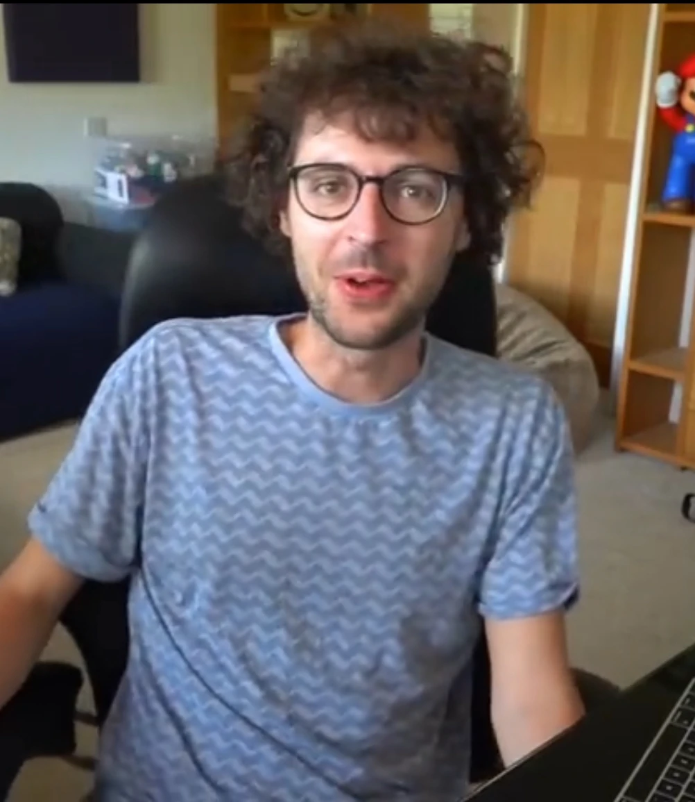
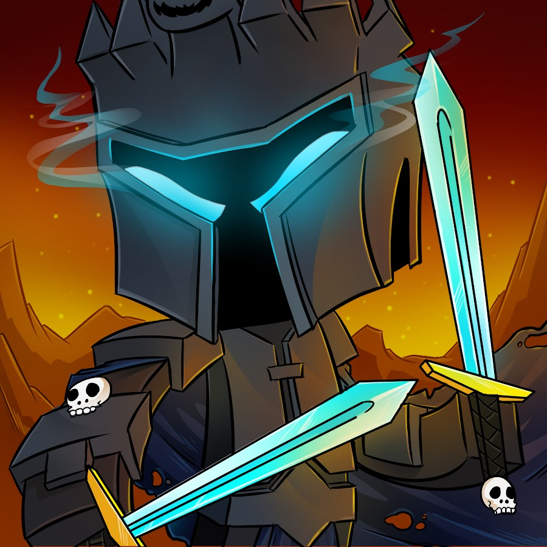

Minecraft's Notable Creators
These creators helped bring Minecraft into the mainstream and help it build it to what it is now. These creators have inspired many, especially those who grew up on these content creators. Of course, there are many more but here are some that have been notable.
List of Creators
DanTDM (Daniel Middleton)

Daniel Middleton, known online as DanTDM, is a British YouTuber renowned for his family-friendly Minecraft content. He began his channel focusing on Minecraft and has since expanded to various gaming videos. His approachable style and consistent uploads have garnered him a massive following, making him one of the most influential figures in the Minecraft community.
Stampylongnose (Joseph Garrett)
Joseph Garrett, better known as Stampylongnose or Stampy, is a British YouTuber who gained fame through his Minecraft videos aimed at a younger audience. His "Stampy's Lovely World" series became particularly popular, inspiring creativity and education among children. Stampy's cheerful demeanor and imaginative storytelling have left a lasting impact on Minecraft's popularity.
PopularMMOs (Patrick Brown)
Patrick Brown, known online as PopularMMOs, is an American YouTuber recognized for his Minecraft "Mod Showcases" and adventure videos. Alongside his ex-wife, Jen, he created entertaining and humorous content that attracted a wide audience. Their dynamic and engaging videos have played a significant role in popularizing Minecraft mods and custom content.
MumboJumbo (Oliver Brotherhood)
Oliver Brotherhood, known as MumboJumbo, is a British YouTuber famed for his technical Minecraft videos focusing on redstone builds and engineering. His tutorials and showcases have educated and inspired players to explore complex aspects of the game, enhancing the community's appreciation for Minecraft's depth and possibilities.